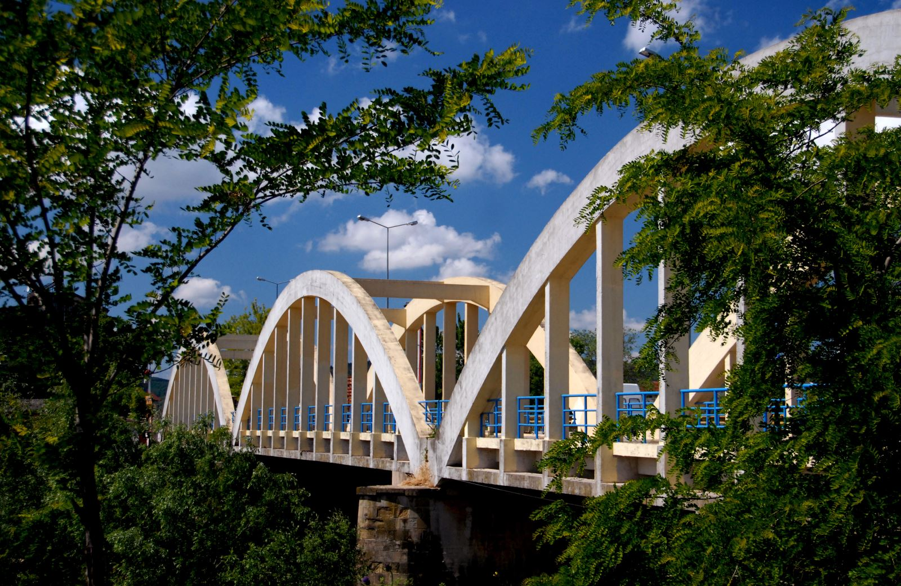
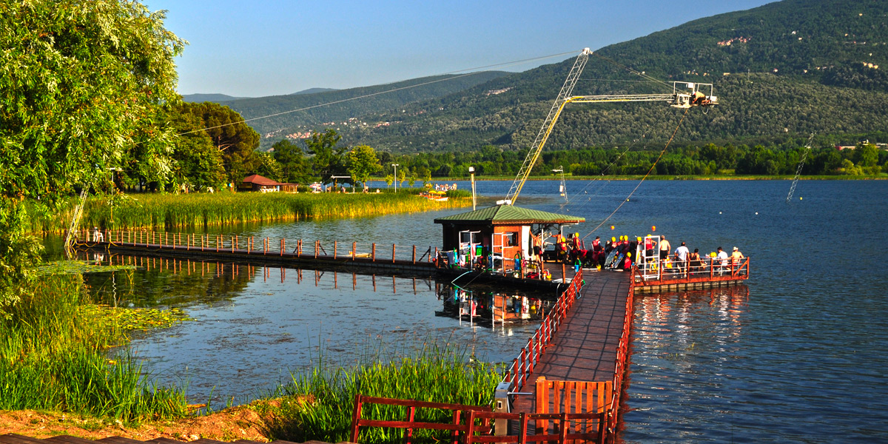
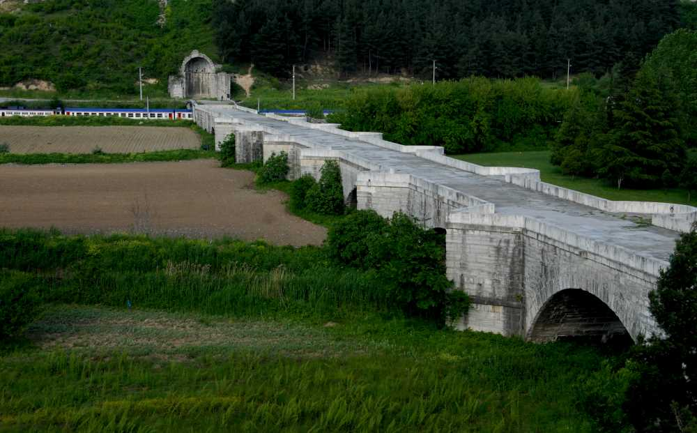
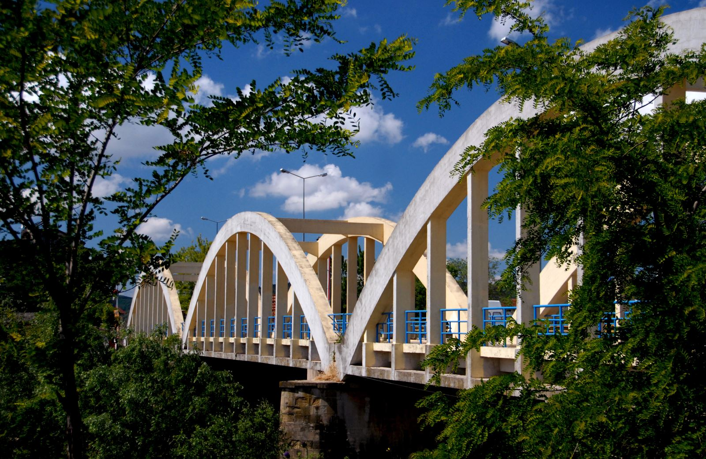
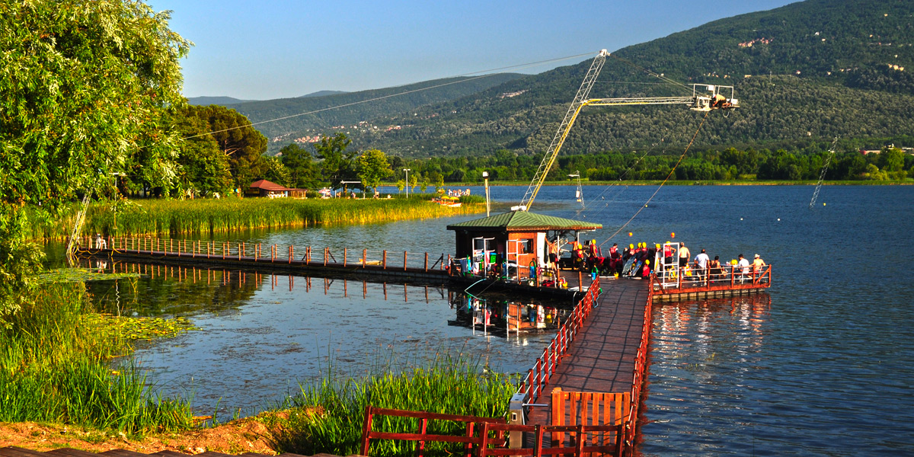
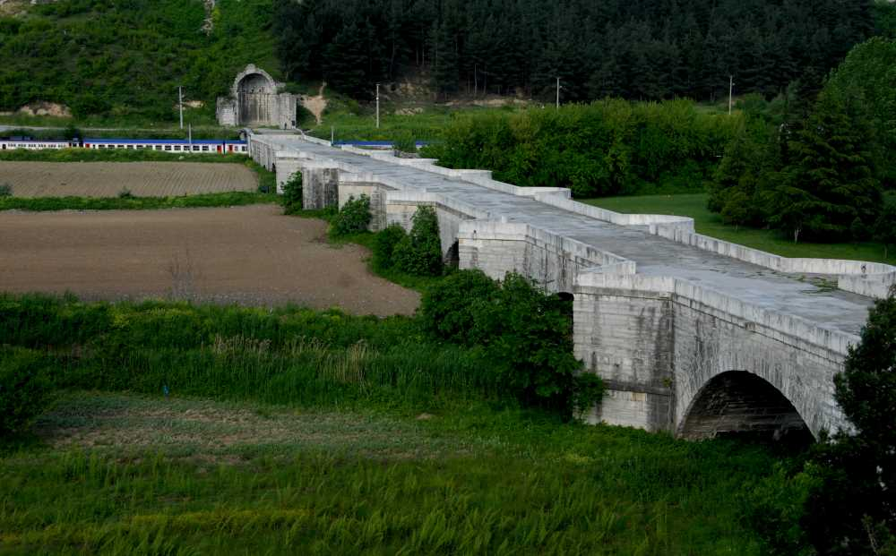

Sakarya, Türkiye'nin en kalabalık yirmi ikinci ilidir. İl ismini topraklarından geçen Sakarya Nehri'nden almıştır. Sakarya İlinin merkezi Adapazarı'dır. Adapazarı 2021 yılında Danimarka'da aldığı ödül ile bisiklet şehri unvanını kazanmıştır. Ayrıca Bizans ve Osmanlı zamanlarından kalan bir çok tarihi esere ev sahipliği yapar.
2021 yılı sonu TÜİK verilerine göre il nüfusu: 1.060.876 dur. 16 ilçe ve belediye, bu belediyelerde toplam 668 mahalle bulunmaktadır.
Marmara Bölgesi'nin Çatalca-Kocaeli Bölümü'nde yer alır. Sakarya'nın kuzeyinde Karadeniz, batısında Kocaeli, Bursa, doğusunda Düzce ve güneyinde de Bolu ile Bilecik bulunmaktadır. Sakarya Nehri, Sakarya'nın Karasu ilçesinde Karadeniz'e dökülür.
Sakarya 1. derece deprem bölgesidir. Eskiden tarım alanları olarak kullanılan sulak arazilerin üstüne kurulması depremlerin yıkıcılığını arttırmaktadır. 1999 yılında olan Gölcük ve Düzce Depremi Sakarya'ya ağır yaralar vermiştir.